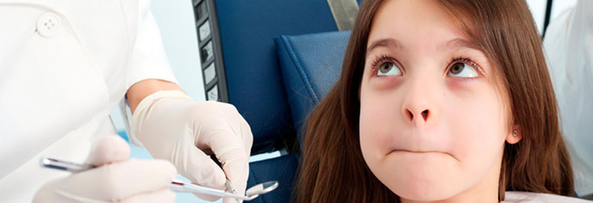
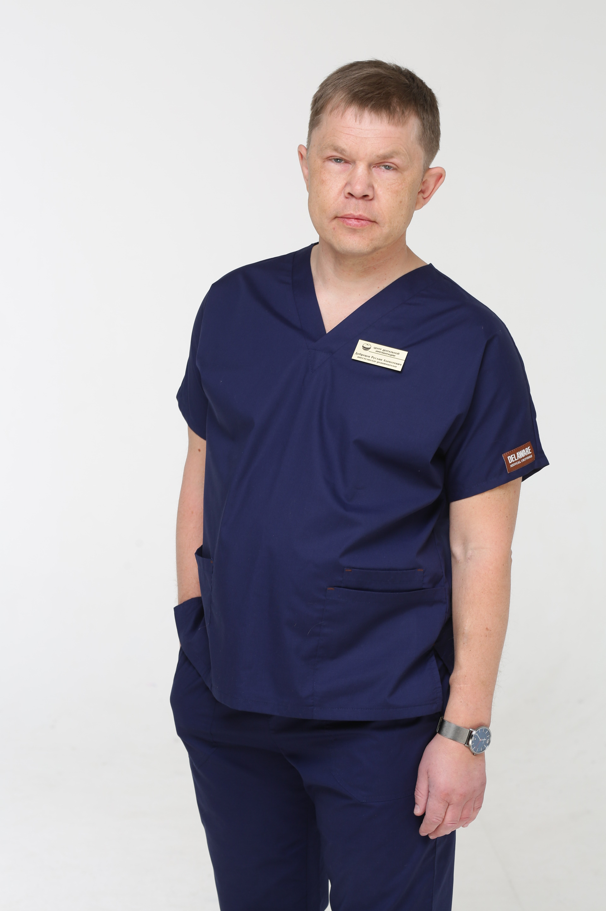
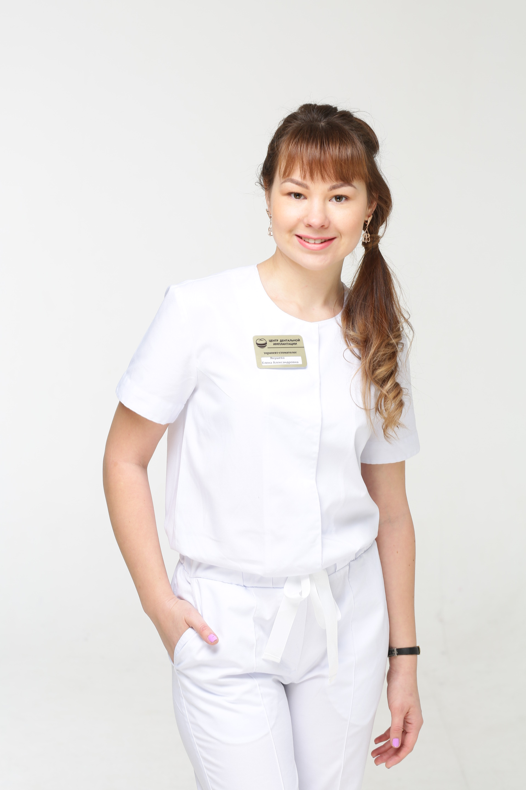
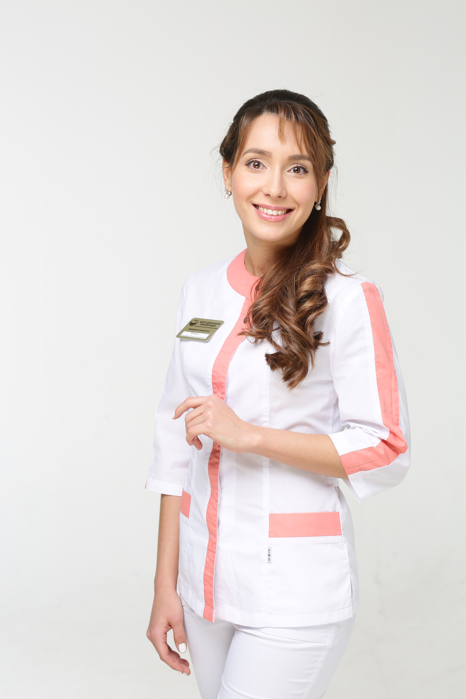
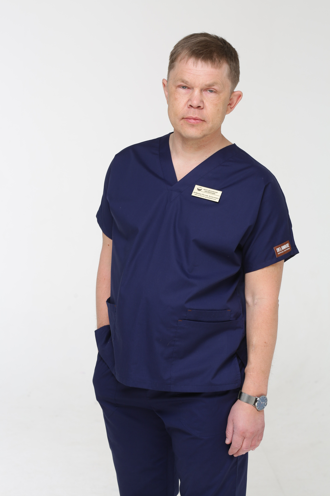
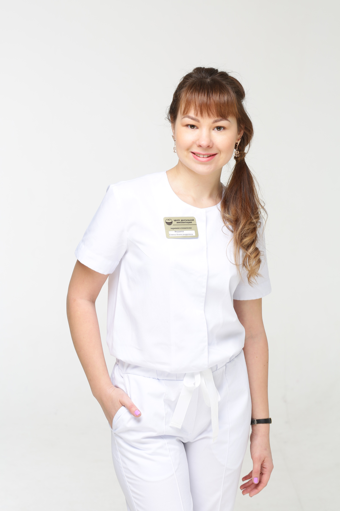
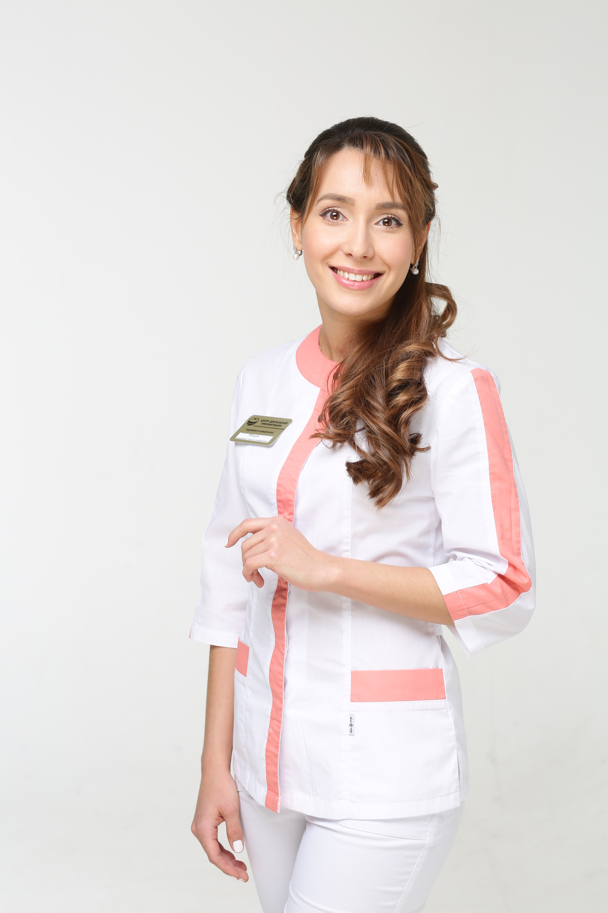

Мы с радостью на них ответим!
Позитивный взгляд на детскую стоматологию




Когда-то поход к стоматологу был непростым испытанием, но современным детям повезло. Им можно лечить зубы без боли! Правда, еще нужно избавиться от страха перед визитом к доктору. Об этом, а также о современных технологиях, идеальной анестезии, грамотной профилактике и гигиене вам расскажут специалисты Центра дентальной имплантации.
Руслан Добрецов
врач-анестезиолог-реаниматолог
В Центре дентальной имплантации мы предлагаем родителям и малышам воспользоваться современной медицинской услугой. Речь идет об обезболивании при помощи кислородно-ксеноновой ингаляции, при котором происходит погружение ребенка в состояние расслабления и покоя на период лечения. Эта методика – современная альтернатива наркозу. Она позволяет маленькому пациенту находиться в полном сознании, дышать, глотать и контактировать с врачом, позволяет вылечить зубки без страха. Рекомендую её детям от трех лет и старше. Ксенон абсолютно безопасен: в небольшой дозе он присутствует в составе воздуха, а из организма полностью выводится через легкие. Кстати, в медицине ксенон используется еще и для снятия усталости и психологических проблем. Использование ксенона в нашей стране одобрено и рекомендовано Минздравом России (Приказ Министерства здравоохранения Российской Федерации №363 от 8 октября 1999 г.). Предварительная подготовка включает в себя: отказ от приема пищи не менее чем за два часа, отказ от приема жидкостей – за час. В нашей клинике прием с применением ксеноновой седации ведется под постоянным контролем врача-анестезиолога, а также оборудования для анестезиологического мониторинга состояния пациента. Ребенок не почувствует никаких неприятных ощущений.
Елена Якушева
врач-терапевт, детский стоматолог
Маленький ребенок просто не способен долго и спокойно сидеть с открытым ртом. В клинике «Центр дентальной имплантации» детей лечат бережно заботливо и внимательно. Мы стараемся завоевать доверие ребенка и стать ему, прежде всего, другом, а потом уже врачом. Методы насильственного удержания сопротивляющегося ребенка в кресле стоматолога давно устарели и не имеют никакого отношения к качественному лечению, а главное – вызывают нежелание следить за своим здоровьем.
Наш центр – одна из немногих стоматологических клиник, предлагающих лечение кариеса молочных зубов с помощью светоотражаемых пломб. Часто в стоматологиях родителям говорят, что детям подобные пломбы не ставят заменяя их обычными, цементными пломбами. Большой опыт в прогрессивные технологии позволяют нам ставить светоотражаемые пломбы, которые продержатся до естественной смены молочных зубов на постоянные.
Многочисленные клиники г.Томска проводят лечение пульпита у детей. Но, как правило, эта процедура занимает не менее трех визитов к стоматологу. А это лишняя психологическая нагрузка и для ребенка и для родителей. Плюс увеличение стоимости лечения. В Центре дентальной имплантации лечение пульпита молочного зуба проводится всего за одно посещение! Эта методика отлично зарекомендовала себя в лучших зарубежных клиниках. Живая пульпа молочного зуба покрывается специальным биосовместимым материалом. Он затвердевает и становится надежной защитой от внешних болезнетворных бактерий. Такое лечение пульпита признано наиболее эффективными и минимально травмирующим зуб.
Мы рекомендуем начинать знакомство малыша со стоматологами не с лечения, а, например, с чистки зубов – после этого ребенку будет не страшно идти на следующую процедуру. Чистка зубов происходит особыми щеточками, а также зубной нитью. При необходимости проводится аппаратная гигиена зубов. После очищения зубы полируются и покрываются специальными минеральными гелями для укрепления эмали. Также нужно не забывать о приходе на профилактический прием к детскому стоматологу и чистку раз в 3-6 месяцев. При такой периодичности мы без труда сможем увидеть даже малейшие изменения эмали и предотвратить кариозное поражение зуба. Важно, чтобы родители просто помогали ребенку с домашней гигиеной полости рта.
Наши специалисты проводят профилактические осмотры после лечения (санации) бесплатно и после приема каждый ребенок получает награду в виде замечательной игрушки или средства ухода за полостью рта. Ждем вашего ребенка к нам в гости каждые 6 месяцев. Найдите время для профосмотра! А наши администраторы обязательно напомнят о том, что пришло время приехать к нам на прием.
Кристина Мацук
врач-терапевт, детский стоматолог
В развитии кариеса большую роль играют воспитание и гигиена зубов. Основной причиной кариеса являются бактерии, содержащиеся в зубном налете. Он легко образуется в результате потребления “мягкой”, термически обработанной углеводной пищи, которая составляет основу ежедневного рациона большинства людей. Каждый родитель должен помнить, что его ребенку необходима профилактика детского кариеса. Мы покажем малышу как правильно чистить зубы, и расскажем родителям, как выбирать средства гигиены для детских зубов. После прорезывания постоянных зубов в целях профилактики кариеса рекомендую проводить герметизацию фиссур. Фиссура - это углубление, бороздки внутри зуба, в которых скапливаются остатки пищи. Толщина эмали в этой области зуба минимальная, поэтому развитие кариеса высоковероятно. Фиссуры заполняют специальными акриловыми смолами и поверхность зуба становится ровной, а зубной налет при чистке удаляется полностью.
Такую не эстетическую методику укрепления зубной эмали, как серебрение молочных зубов, стараемся не использовать. Предпочитаем более современную, действенную - фторирование зубов. Родителям важно знать, что фторирование не защищает уже пораженные кариесом зубы. Покрытый фторирующей пленкой очаг заражения продолжит разрастаться вглубь, захватывая ткани зуба, расположенные под поврежденной эмалью. Единственное исключение из этого правила – самая начальная стадия кариеса (так называемая стадия пятна), когда процесс еще не проник вглубь эмали.
Стоит заметить, фторирование уменьшает риск возникновения кариеса на 60% и повышает прочность эмали в 10 раз, продлевая срок службы зубных пломб.
Как это происходит?
Вновь прорезавшиеся зубы у малышей еще недостаточно крепки, эмаль недостаточно минерализована, а потому может быть легко повреждена кислотами, выделяемыми кариозными бактериями. Минерализация зуба продолжается около 2-х лет. В это время зубам ребенка требуется дополнительная защита, здесь и поможет фторирование. У детей постарше меняется гормональный фон, повышается вязкость слюны, которая не может столь же эффективно орошать полость рта и очищать эмаль. К тому же к этому возрасту контроль родителей за личной гигиеной полости рта ребенка ослабевает. Наши специалисты рассчитывают на помощь и сотрудничество родителей. От этого зависит, в каком настроении ребенок придет в клинику, как он будет контактировать с доктором, успешно ли пройдет лечение.
Для этого можем дать вам несколько советов:
- Расскажите ребенку о визите к детскому стоматологу, как об интересном но рядовом событии, например, как о знакомстве с новыми друзьями.
- С ребенком может поговорить член семьи, который сам не испытывает страха перед зубными врачами. Ребенок может почувствовать ваши растерянности и страх, и сам начнет бояться.
- Не говорите, чтобы он “не боялся” или, что “не будет больно” или “надо будет потерпеть”. Мысль что посещение детского стоматолога требует смелости или может причинить боль, могла не приходить ребенку в голову.
- Не рассказывайте ребенку о том, что ему будут делать, особенно, если это касается анестезии, удаления или пломбирования зубов. Детский стоматолог индивидуально определит, что необходимо знать вашему ребенку перед процедурой.
- Выберите утреннее время для первого визита, чтобы ребенок не думал о предстоящем целый день. Маленькие дети как правило, ведут себя лучше в утреннее время.
- Рекомендуем сопровождать ребенка только одному родителю. Возьмите с собой любимую книгу или игрушку ребенка. Перед тем как вас пригласят в кабинет, сядьте вместе и почитайте вслух, посмотрите картинки, поиграйте.
- Отнеситесь к первому визиту к детскому стоматологу со всей серьезностью. Хорошее впечатление от первого посещения врача может сформировать отношение ребенка и позитивно настроить его на будущие помещения стоматолога.
Доверившись специалистам Центра дентальной имплантации, вы можете быть уверены, что ваш ребенок получит только положительный опыт стоматологического лечения, что может обрести и сохранить доверие к стоматологу. А это значит прогнозируемый эффект лечения, здоровую и красивую улыбку на долгие годы.